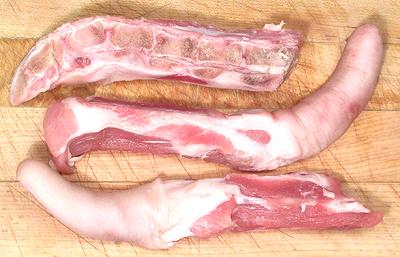

Pig Tails

Tails are popular in most pig raising regions and treated similarly to
pig feet, but they are meatier with a lot less tendons. Those shown in the
photo were prepared in the way normal for Asian markets, cut to lengths
and split in half lengthwise. The one in the center of the photo was
8-1/2 inches long. Markets for other ethnic populations may prepare them
less thoroughly.
More on Cuts of Pork.
Buying:
Pig tails can be found in markets serving Philippine,
Chinese, Southeast Asian and Caribbean communities. They should have little
odor and the skin should be firm. Here in Southern California the Southeast
Asian markets prepare them thoroughly and pack them in foam trays holding
1-1/2 to 2 pounds depending on market.
Markets serving other ethnic communities may prepare them quite
differently, sometimes whole tails just de-haired, sometimes a whole tail
with a big chunk of pig behind attached.
Prep:
Pig tails prepared as shown in the photo at the
top of the page need no preparation. Tails purchased from less meticulous
suppliers may have some hairs still attached. Just shave them off with a
regular razor - the one you shave your face and/or legs with will do
fine.
Cooking:
Pig tails should be par boiled in boiling water
for about 5 minutes and then rinsed. Clean the pot, fill it with plenty
of water and the pig tails. Bring it to a boil, then simmer covered for
about 1 hour to 1-1/2 hour depending on how tender you want them.
Note that for many recipes, instead of par boiling the tails they are
lightly browned. I recommend this be done in the broiler or the grill.
Coat them lightly with oil before browning. The problem with browning
them in oil on the stovetop is the skin. Pig skin splatters oil around
explosively and can make quite a mess.
ap_tailz 091210 - www.clovegarden.com
©Andrew Grygus - agryg@clovegaden.com - Photos on this
page not otherwise credited are © cg1 -
Linking to and non-commercial use of this page permitted